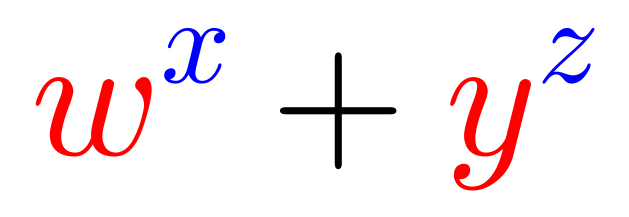

Problem
Alex can choose four different numbers \(w,x,y\) and \(z\) from the set \[\{-1,-2,-3,-4,-5\}\] What is the largest possible value of \(w^x + y^z\)?

Solution
Consider \(w^x\) and choose \(w\) and \(x\) to be different numbers from the set \(\{-1,-2,-3,-4,-5\}\).
What is the largest possible value for \(w^x\)?
Since \(x\) will be negative, we write \(w^x=\dfrac{1}{w^{-x}}\), where \(-x>0\).
If \(x\) is odd, then since \(w\) is negative, and \(w^x\) will be negative.
If \(x\) is even, then \(w^x\) will be positive.
So to make \(w^x\) as large as possible, we make \(x\) even (ie. \(-2\) or \(-4\)).
Also, in order to make \(w^x=\dfrac{1}{w^{-x}}\) as large as possible, we want to make the denominator, \(w^{-x}\), as small as possible, so \(w\) should be as small as possible in absolute value.
Therefore, the largest possible value of \(w^x\) will be when \(w = -1\) and \(x\) is either \(-2\) or \(-4\), giving 1 in both cases (ie. \((-1)^{-2}=(-1)^{-4}= 1\)).
What is the second largest possible value for \(w^x\)?
Again, we need \(x\) to be even to make \(w^x\) positive, and from above, we can assume that \(w \neq -1\).
When \(x=-2\), the smallest possible base (in absolute value) is \(w=-3\) and \(w^x = \dfrac{1}{(-3)^2}=\dfrac{1}{9}\).
When \(x=-4\), the smallest possible base (in absolute value) is \(w=-2\) and \(w^x = \dfrac{1}{(-2)^4}=\dfrac{1}{16}\).
The largest of these two is \(\dfrac{1}{9}\).
Therefore, the two largest possible values for \(w^x\) are 1 and \(\dfrac{1}{9}\).
Thus, looking at \(w^x + y^z\), since \(-1\) can only be chosen for one of these four numbers, then the largest possible value for this expression is the sum of the largest two possible values for \(w^x\), ie. \(1 + \dfrac{1}{9}= \dfrac{10}{9}\), which is obtained by calculating \((-1)^{-4} + (-3)^{-2}\).
Therefore, the largest value of \(w^x + y^z\) is \(\dfrac{10}{9}\). (This will occur when \(w=-1\), \(x=-4\), \(y=-3\), and \(z=-2\) or \(w=-3\), \(x=-2\), \(y=-1\), and \(z=-4\).)